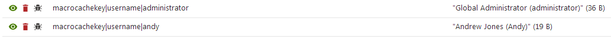

Caching the results of macros
You can store the results of macro expressions in the application's cache. Caching allows the system to save resources when processing macros – macros only need to be resolved once, and subsequent occurrences load the result from the application's memory (until the cache expires).
To cache the result of a macro, enclose the expression into the Cache method. The main macro expression must be specified as the method's first parameter.
You can also add the following optional parameters for the Cache macro method:
int cacheMinutes – the number of minutes for which the cache stores the macro's result. The default value is 10 minutes.
bool condition – a boolean condition that must be fulfilled (true) in order to cache the macro's result.
string cacheItemName – the name of the cache key that stores the macro's result.
string cacheItemNameParts – any number of parameters whose values are combined with the cacheItemName into the name of the cache key.
Macro cache key name notes
The system always adds the macrocachekey| prefix to the cache key name in order to avoid cache key conflicts.
If you set the same cache key name for multiple macros, the macros share the same cached value.
If the cache key name is not specified, the default name includes variables, such as the macro's text (including the signature), and the name and culture of the user viewing the page where the macro was resolved.
CMSCacheDependency cacheDependency – sets dependencies for the cache key (use the GetCacheDependency method to get the dependency object).
Example - Basic
The following macro caches the value of the "string".ToUpper() expression:
{% Cache("string".ToUpper()) %}When the system resolves the macro, the result (STRING) is saved into the cache for 10 minutes. If the macro needs to be resolved again while the cache is still valid, the system does not process the macro at all, and loads the result directly from the cache.
Tip: You can confirm the caching functionality of macros by viewing the system's cache debugs (cache items and cache access).
Example - Advanced
The following example demonstrates how to specify the optional parameters when caching macros:
{% Cache(CurrentUser.GetFormattedUserName(), 5, true, "username|" + CurrentUser.UserName, GetCacheDependency("cms.user|all")) %}The macro caches the formatted name of the current user for 5 minutes.
The name of the macro's cache key contains the user name, so each user has a separate record in the cache.
The cms.user.all cache dependency ensures that the system automatically clears the cache whenever a user account in the system is modified.
When the system resolves the macro for different users, you can find the corresponding cache keys and their values in the cache items debug.

Cache items debug showing the records stored after resolving the macro for two different users